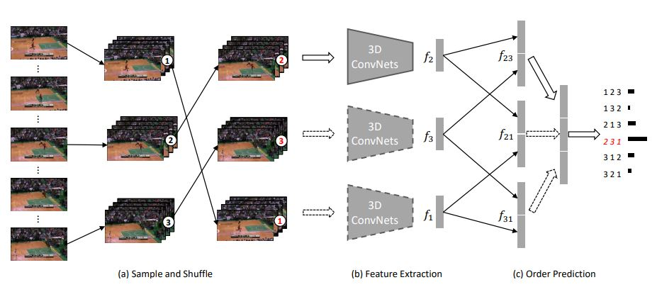

This approach learns the
representation by predicting the permutation order. The network is fed N clips from a video and then it predicts the
order from N! possible permutations.
More details can be found
here.

Overview of Clip Order Prediction Framework. (a) Sample and Shuffle: Sample non-overlapping clips and shuffle them to a
random order. (b) Feature Extraction: Use the 3D ConvNets to extract the feature of all clips. The 3D ConvNets is not pre-trained in any
datasets. (c) Order Prediction: The extracted features are pairwise concatenated, and fully connected layers are placed on top to predict the
actual order. The dashed lines mean that the corresponding weights are shared among clips. The framework can be trained end-to-end, and
the 3D ConvNets can be used as a video feature extractor or pre-trained weights after training.